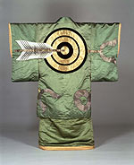
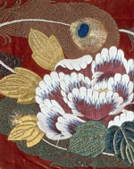

|
|
Kazari: Decoration
and Display in Japan, 15th – 19th centuries The world of kazari is the vital, pre-modern world of decoration and display in traditional Japan. This fascinating exhibition examines the dynamic and multi-sensory development of Japanese arts over five centuries, focusing on particular periods of high cultural achievement. Organised by The British Museum and Japan Society, New York and in association with Suntory Museum of Art, Tokyo the exhibition includes some 200 objects, many of which have never before been seen in Britain. Important loans from almost fifty major public and private collections of Japanese art in Japan, USA and UK complement The British Museum’s own extensive holdings. According to one theory the Japanese word kazari derives from the verb kazasu which means ‘to adorn the hair with flowers’. It has since developed to be widely used in contexts relating to decoration and display and is an integral part of the Japanese language and traditional aesthetics. Kazari does not conform solely to the Western aesthetic of ‘fine art’; it can be applied to categories of art such as painting, but also encompasses everything from ceramics to clothing, lacquer and glass ware, even hair accessories. Kazari also governs the relationship between these seemingly disparate objects when used together in specific cultural contexts. The wit inherent in many of the designs suggests a sense of play, and often implies something beyond what is actually represented. Kazari extends to active participation in social activities such as tea and literary gatherings, seasonal festivals or even a visit to the brothel quarters as these events transmute the ordinary into the extraordinary. Kazari is an ephemeral sensation that through surprise and splendour can take you out of the everyday and elevate the mundane into the realm of the sacred. The show is arranged into six thematic sections that explore the aesthetics of decoration and display from the Muromachi (1333 – 1573), through the Momoyama (1573 – 1615) to the Edo (1615 – 1868) periods. The first, China in Japan: The Shogun’s Court (15th – 16th centuries) features a recreation of an elaborate guest hall display in the shogun’s mansion and includes examples of highly prized Chinese art. Display was considered so important that illustrated manuals were produced at the time to propound and perpetuate the art. The Swagger of the New Military Elite (first half of 17th century), looks at the more exuberant style of a newly victorious samurai class, depicted in paintings of perpetual pleasure-seeking and expressed in ostentatious costumes and exotic, vividly coloured tableware. Styles of the Merchant Class (late 17th – early 18th centuries) focuses on the wealthy merchants of Kyoto. The ‘Rinpa’ school personified by Ogata Korin produced screen paintings of unsurpassed stylishness, and also applied their designs directly onto other media, notably ceramics and lacquer ware. Fashions for Women of the Warrior Class (18th - 19th centuries) reveals the lifestyle of the elite women during the Edo period via fabulous lacquer cosmetic sets, fine robes and printed books of etiquette and fabric design. The Floating World on Display (late 18th – 19th centuries) deals with the licensed brothel quarter of Edo (Yoshiwara) and Kabuki theatres where courtesans and actors played out tableaux of living kazari to attract and entertain. A newly conserved screen, Display Room of the Tamaya in Yoshiwara, attributed to Utagawa Toyoharu, depicts the courtesans waiting for customers and brings together a number of strands of kazari. The final section Spectacular Festivals (17th – 19th centuries) examines the lavish festivals in which fanciful floats and elaborate costumes allowed participants of all classes to escape the every-day and indulge in riotous behaviour to entertain the gods. For further information or visuals please contact Hannah Boulton on 020 7323 8522 or email hboulton@thebritishmuseum.ac.uk A fully illustrated catalogue, Kazari: Decoration and Display in Japan, 15th – 19th centuries, edited by Dr Nicole Coolidge Rousmaniere accompanies the exhibition and is published by The British Museum Press, priced £24.99. A comprehensive programme of education events will run alongside the exhibition including a six week course on Japanese design, a study day featuring international expert speakers, sessions on Japanese print and paper making, gallery talks and a week long special programme of events for schools, Focus on Japan ( 24-28 March 2003 ). For more details please contact the press office. The exhibition, organized by Japan Society, New York, and The British Museum, London, in association with the Suntory Museum of Art, Tokyo, was made possible by Fidelity Investments through the Fidelity Foundation. Japan Society and The British Museum extend gratitude to Mr. Kazuo Okada for his generous support through The Japan Foundation. The Blakemore Foundation and The Japan Foundation also provided assistance. Support for the exhibition at The British Museum is provided by the Toshiba International Foundation, the Daiwa Anglo-Japanese Foundation, and the Great Britain-Sasakawa Foundation. Support for the exhibition at Japan Society is provided by Martha Stewart Living Omnimedia, Inc.; the Mary Livingston Griggs and Mary Griggs Burke Foundation; the Kajima Foundation for the Arts; and Florence and Herbert Irving. Transportation for the exhibition is supported by Japan Airlines.
|
 Kabuki costume
with target and arrows Campaign Coat
( jinbaori ) with Mount Fuji and 'divine fire'  Sash (obi) with
peony and peacock feather motif
|
||
|
|
|||